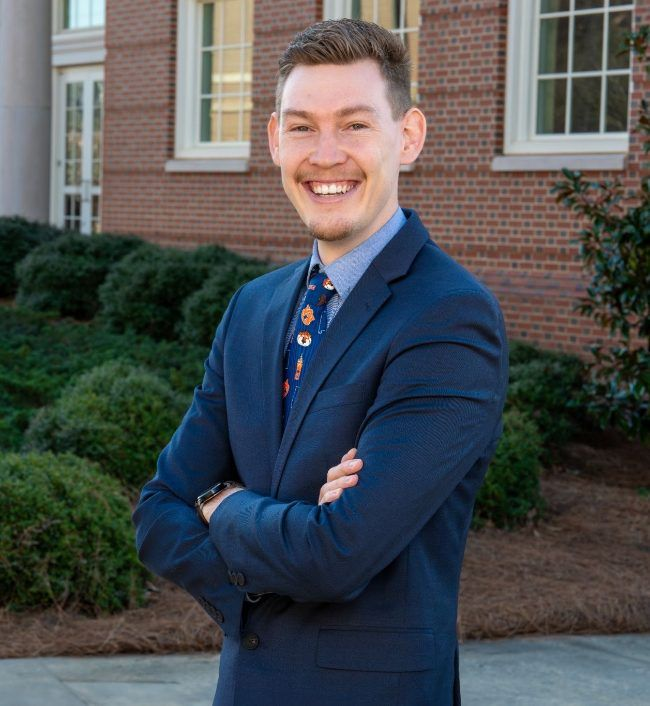
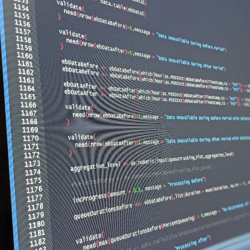

Adrian Cottam, Ph.D.
Assistant Research Professor · Auburn University Transportation Research Institute (AUTRI)
I am a transportation researcher. I build digital twins, large-scale models, and artificial intelligence tools that let engineers see, test, and improve how transportation systems behave, from a single military installation gate to a statewide highway network.
I'm passionate about transportation engineering and using concepts from the information technology sector to propel my field into the next generation. I pursue excellence in all that I do, and share my passion for the industry with my peers. I seek to foster a culture of innovation with those around me, and motivate my peers to achieve great things through teamwork.
~$8Min active awards as Co-PI
13peer-reviewed journal articles
17peer-reviewed conference papers
2TRB committee best paper awards (2025)
News
- Awarded the ALDOT Public Transportation Management and Rural Transit Assistance Program ($3.98M) as Co-PI, bringing training and technology transfer to Alabama's transit agencies.
- Awarded a USDOT Safe Streets and Roads for All grant for a data-driven multimodal campus road safety action plan ($1.09M) as Co-PI.
- "AI Safety Analyst," on multimodal large language models for transportation safety assessment, accepted for the 2027 TRB Annual Meeting.
- Our AUTRI team was one of twelve selected nationally for the FMCSA Research and Technology IDIQ.
- Awarded a USDOT SS4A grant on Rectangular Rapid Flashing Beacon warrants ($1.05M) as Co-PI.
- Our proposal to found the Rail Center for Research Enhancing Short-line Transportation (RailCREST) was awarded an FRA Consolidated Rail Infrastructure and Safety Improvements (CRISI) grant. I am a Co-PI on the center.
- Two papers earned TRB committee best paper awards (ACP70 Best Overall Paper; ACP20 Young Professional/Student Best Paper).
- Auburn Engineering news: AUTRI's Department of Defense research on safe and efficient entry control points.
Education
- Doctor of Philosophy, Transportation Engineering (Minor in Management Information Systems)
- Graduate Certificate in College Teaching
- Master of Engineering, Transportation Engineering
- Bachelor of Science in Civil Engineering
- Associate of Science in Civil Engineering (Highest Honors)
Skills
Transportation Engineering
AutoCADMicroStationVISSIMVISTROHighway Capacity ManualHCSMicrosimulation calibrationUnreal EngineCarSim

AI and Data Science
Large language modelsMultimodal LLMsAgentic AI architecturesComputer visionObject detectionReinforcement learningImitation learningMachine learningNeural networksPythonRC#SQL ServerMySQLR ShinyShinyProxyWeb development
Teaching
Learner-centered teachingBackwards designD2LCanvasCertificate in College Teaching
Contact
- Email: adrian.cottam@auburn.edu
- Phone: (520) 604-1101
- Office: 311 W Magnolia Ave, Room 205, Auburn, AL 36849
- Elsewhere: LinkedIn · ORCID · Auburn profile